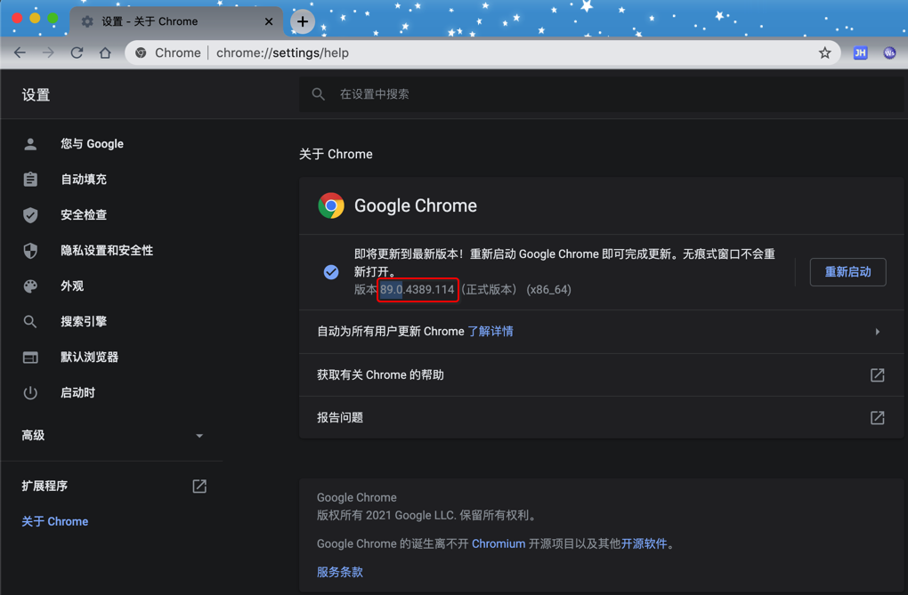
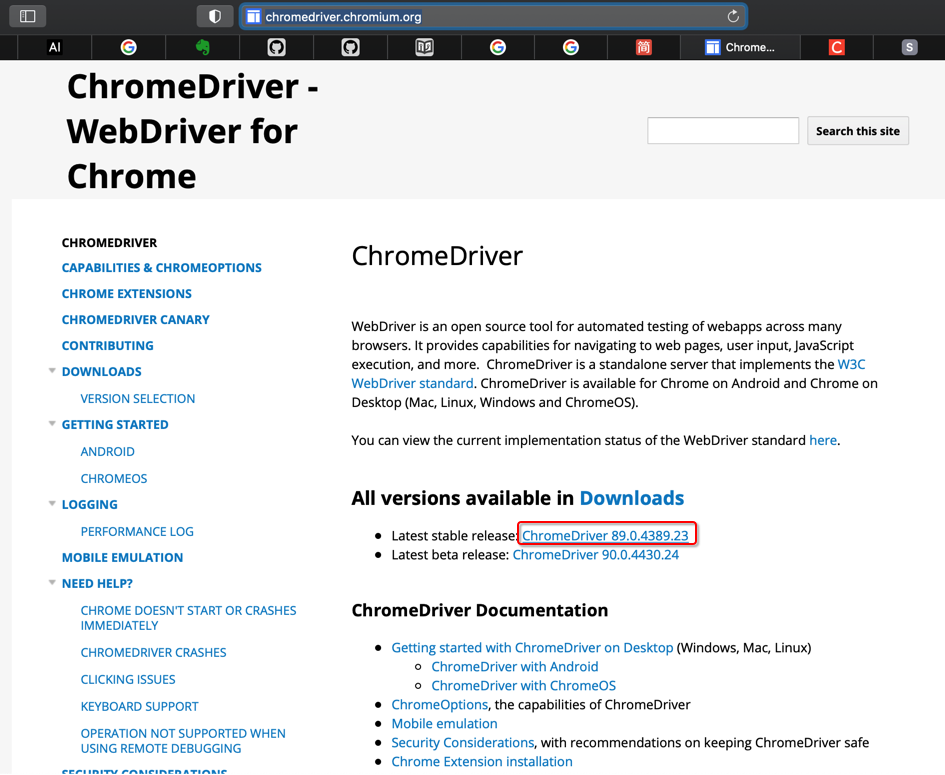
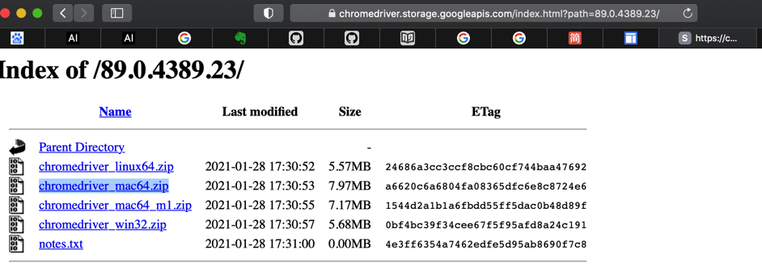
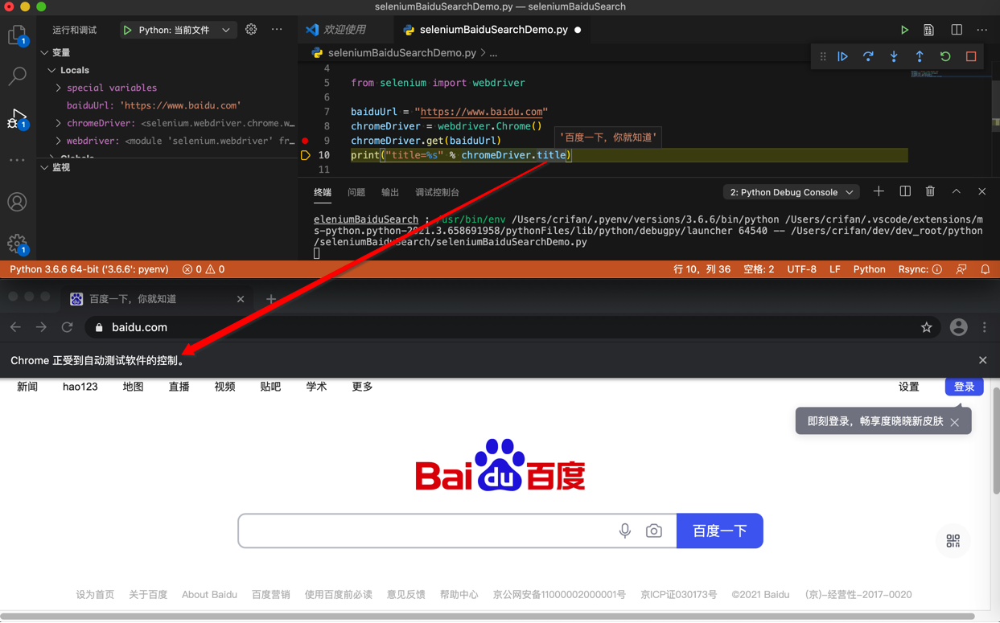

初始化
核心逻辑：
- Python中安装Selenium库
pip install selenium
- 再安装webdriver
- 比如：
Chrome的driver：chromedriver- 需要下载到二进制的chromedriver，并确保PATH中能找到
- 比如：
安装selenium
pip3 install selenium
附上完整log
pip3 install selenium
Looking in indexes: http://mirrors.aliyun.com/pypi/simple/
Collecting selenium
Downloading http://mirrors.aliyun.com/pypi/packages/80/d6/4294f0b4bce4de0abf13e17190289f9d0613b0a44e5dd6a7f5ca98459853/selenium-3.141.0-py2.py3-none-any.whl (904 kB)
|████████████████████████████████| 904 kB 1.2 MB/s
Requirement already satisfied: urllib3 in /Users/crifan/.pyenv/versions/3.6.6/lib/python3.6/site-packages (from selenium) (1.25.8)
Installing collected packages: selenium
Successfully installed selenium-3.141.0
安装driver
Selenium的运行依赖于具体的浏览器（的内核），此处叫做：driver
Chrome的driver：ChromeDriver=chromedriver
安装Chrome的driver：ChromeDriver
下载ChromeDriver
要下载和你的Chrome版本一致的ChromeDriver
此处查看到Chrome的版本是: 89.0

所以要下载的ChromeDriver也是要于此版本一致的，即下载ChromeDriver 89.0的版本
- 下载源1：Chrome官网
- ChromeDriver - WebDriver for Chrome
- 此时最新版是：
ChromeDriver 89.0.4389.23- 
- 此时最新版是：
- Index of /89.0.4389.23/
- chromedriver_mac64.zip
- 
- ChromeDriver - WebDriver for Chrome
- 下载源2：淘宝的npm源
确保命令行中能调用到chromedriver
想要让命令行中，可以调用到chromedriver，即：把chromedriver放到环境变量PATH中：
下载后解压得到二进制的：chromedriver
把chromedriver放到PATH中
- 方式1：移动到系统相关目录
sudo mv /xxx/chromedriver /usr/local/bin - 方式2：放到某个路径下，把该路径加到PATH中
- 此处放到了：
/Users/crifan/dev/dev_tool/selenium/chromedriver - 把路径加到PATH中
- 编辑启动脚本：
vi ~/.zshrc- 在文件最后加上：
PATH=$PATH:/Users/crifan/dev/dev_tool/selenium
- 在文件最后加上：
- 使其立刻生效：
source ~/.zshrc
- 编辑启动脚本：
- 此处放到了：
然后去确认命令行中能找到：
which chromedriver
确保能输出对应了路径，表示找到了。
顺带也可以去：看看版本：
chromedriver --version
此处输出是：ChromeDriver 89.0.4389.23
写测试代码，确认环境正常
可以用代码：
from selenium import webdriver
baiduUrl = "https://www.baidu.com"
chromeDriver = webdriver.Chrome()
chromeDriver.get(baiduUrl)
print("title=%s" % chromeDriver.title)
确认Selenium是否正常工作：可以启动Chrome浏览器，打开百度首页。
正常的效果：

其中可以注意到：Selenium操作的Chrome会有提示：Chrome正受到自动测试软件的控制